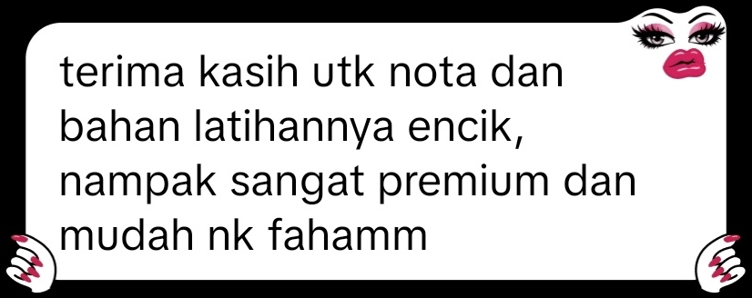

<!doctype html>
<html lang="ms">
<head>
<meta charset="utf-8">
<title>Titik Sejarah Testimoni 01</title>
<style>
@font-face{font-family:'Marker';src:url(fonts/PermanentMarker.woff2) format('woff2')}
@font-face{font-family:'Hand';src:url(fonts/PatrickHand.woff2) format('woff2')}
@font-face{font-family:'Caveat';src:url(fonts/Caveat.woff2) format('woff2');font-weight:400 700}
html,body{margin:0;width:1080px;height:1920px;overflow:hidden}
/* Same notebook-paper base as engine/cover.html and the milestone posters */
#c{position:relative;width:1080px;height:1920px;overflow:hidden;background:#F3EBDD url(paper.jpg);color:#172C63;font-family:'Hand'}
#c::before{content:'';position:absolute;inset:0;background:
  linear-gradient(to right,transparent 108px,rgba(201,52,54,.4) 108px,rgba(201,52,54,.4) 111px,transparent 111px),
  repeating-linear-gradient(to bottom,transparent 0 62px,rgba(23,44,99,.08) 62px 64px)}
.abs{position:absolute}
.abs svg{display:block;width:100%;height:auto;overflow:visible}
.ctr{left:0;width:1080px;text-align:center}
.red{color:#C93436}
.chip{display:inline-block;background:#172C63;color:#F5C928;font-family:'Marker';font-size:46px;padding:8px 32px 12px;border-radius:14px;box-shadow:7px 8px 0 #C93436}
.hl{background:linear-gradient(to bottom,transparent 52%,#F5C928 52%,#F5C928 94%,transparent 94%);padding:0 14px}
.head{font-family:'Marker';font-size:112px;line-height:1.02;letter-spacing:1px}
.by{font-family:'Caveat';font-weight:700;font-size:56px;color:#C93436}
/* Real screenshot, framed like a phone screen pinned to the page */
.shot{left:90px;top:640px;width:900px;box-sizing:border-box;padding:22px;background:#172C63;border-radius:34px;box-shadow:12px 14px 0 #F5C928;transform:rotate(-1.5deg)}
.shot img{display:block;width:100%;border-radius:18px}
.tape{position:absolute;width:190px;height:50px;background:rgba(243,235,221,.9);border:2px solid rgba(23,44,99,.15)}
.note{font-family:'Caveat';font-weight:700;font-size:46px;color:#172C63}
.ptitle{font-family:'Marker';font-size:46px;line-height:1.05;white-space:nowrap}
.li{display:flex;align-items:center;gap:14px;font-family:'Marker';font-size:40px;line-height:1.1;margin:0 0 22px;white-space:nowrap}
.li .ck{width:48px;flex:none}
.cta{display:inline-block;background:#F5C928;border:6px solid #172C63;border-radius:22px;box-shadow:9px 10px 0 #172C63;padding:8px 40px 12px;font-family:'Marker';font-size:60px;line-height:1}
.cta small{display:block;font-family:'Caveat';font-weight:700;font-size:42px;color:#C93436;margin-top:6px}
.brand{left:0;width:1080px;top:1622px;display:flex;justify-content:center;align-items:center;gap:22px}
.brand .dp{width:140px;height:140px;border:6px solid #172C63;background:#fff url(../assets/brand/titik-sejarah-dp-square.jpg) center/cover;box-shadow:7px 8px 0 #172C63;flex:none}
.brand .t{font-family:'Marker';font-size:56px;line-height:.95}
.brand .tg{font-family:'Caveat';font-weight:700;font-size:40px;color:#C93436;margin-top:6px}
</style>
<script src="../node_modules/roughjs/bundled/rough.js"></script>
</head>
<body>
<div id="c"></div>
<script type="module">
import { D, R, C, setSeed } from './doodles.js';
const c = document.getElementById('c');
const add = (html, css, cls = 'abs') => { const d = document.createElement('div'); d.className = cls; d.style.cssText = css; d.innerHTML = html; c.appendChild(d); return d; };
const svg = (w, h, body) => `<svg viewBox="0 0 ${w} ${h}" xmlns="http://www.w3.org/2000/svg">${body}</svg>`;
await document.fonts.ready;
setSeed(301);

// 1) Label + headline drawn from the customer's own words
add('<span class="chip">TESTIMONI PEMBELI</span>', 'top:195px;transform:rotate(-2deg)', 'abs ctr');
// big hand-drawn quote mark
add(svg(160, 130, R.path('M20 120 Q10 60 60 20', { stroke: C.red, strokeWidth: 16 }) + R.circle(40, 100, 50, { fill: C.red, stroke: C.red }) +
  R.path('M100 120 Q90 60 140 20', { stroke: C.red, strokeWidth: 16 }) + R.circle(120, 100, 50, { fill: C.red, stroke: C.red })),
  'left:120px;top:290px;width:80px');
add('<span class="hl">PREMIUM</span> &amp;<br>MUDAH <span class="red">FAHAM!</span>', 'top:300px;transform:rotate(-2deg)', 'abs ctr head');
add('— kata pembeli kami', 'top:548px;left:470px', 'abs by');

// 2) The real message (screenshot crop, unedited)
add('', '', 'abs shot');
add('', 'left:150px;top:615px;transform:rotate(-8deg)', 'abs tape');
add('', 'left:770px;top:620px;transform:rotate(6deg)', 'abs tape');
add('mesej sebenar pembeli', 'left:560px;top:1030px;transform:rotate(-3deg)', 'abs note');
add(D.arrow(10, 70, 110, 10, { w: 120, h: 80, color: C.red, sw: 6, bend: 0.25 }), 'left:440px;top:1015px;width:110px');

// 3) Product + benefits
add('NOTA + BAHAN LATIHAN <span class="red">SEJARAH SPM</span>', 'top:1120px', 'abs ctr ptitle');
add(D.book('NOTA', C.red, { size: 34, y: 145 }), 'left:130px;top:1200px;width:165px;transform:rotate(-8deg)');
add(D.book('LATIHAN', C.navy, { size: 26, y: 142 }), 'left:260px;top:1215px;width:165px;transform:rotate(6deg)');
add(D.star(C.gold), 'left:390px;top:1185px;width:64px;transform:rotate(12deg)');
const ck = D.check(C.red);
add(`<div class="li"><div class="ck">${ck}</div>Ikut buku teks KSSM</div>
     <div class="li"><div class="ck">${ck}</div>Ringkas &amp; mudah faham</div>
     <div class="li" style="margin:0"><div class="ck">${ck}</div>Sedia untuk ulang kaji</div>`, 'left:480px;top:1218px;width:560px');

// 4) Call to action
add('<span class="cta">DAPATKAN SEKARANG!<small>Link di bio</small></span>', 'top:1435px;transform:rotate(-1.5deg)', 'abs ctr');

// 5) Brand sign-off with the official profile picture (unaltered)
add('<div class="dp"></div><div><div class="t">TITIK <span class="red">SEJARAH</span></div><div class="tg">Kenali sejarah, fahami masa kini.</div></div>', '', 'abs brand');

await new Promise((r) => requestAnimationFrame(() => requestAnimationFrame(r)));
await Promise.all([...document.images].map((im) => (im.complete ? 0 : new Promise((r) => (im.onload = im.onerror = r)))));
window.__done = true;
</script>
</body>
</html>
